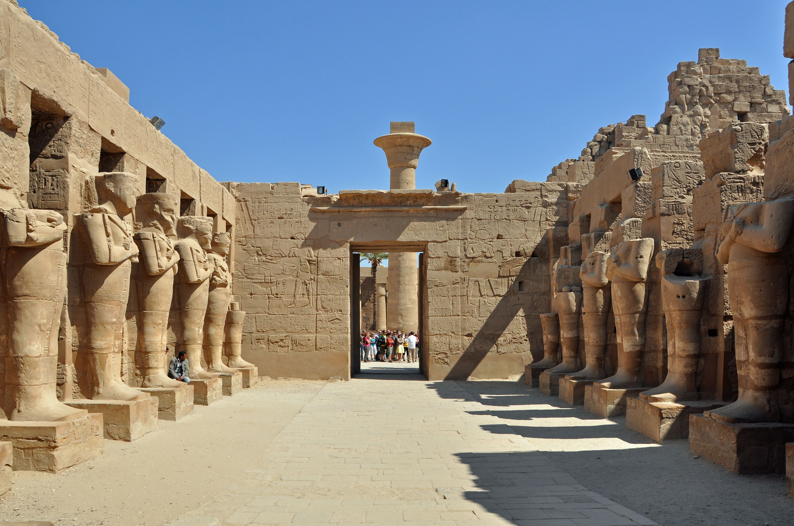
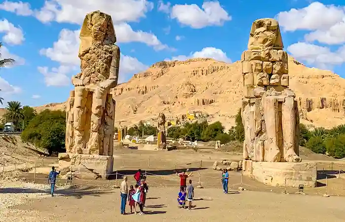
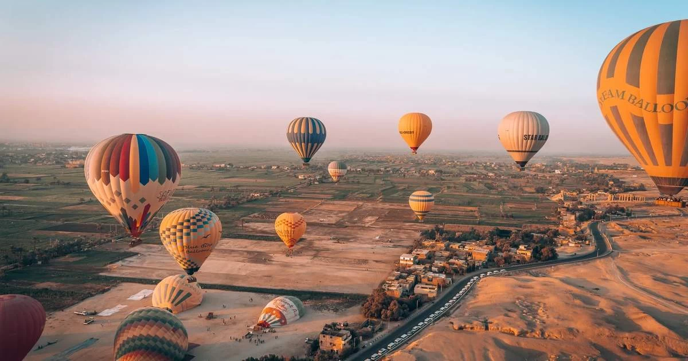

Karnak Temple Complex
The largest religious building ever constructed. The Hypostyle Hall, with its 134 massive sandstone columns, remains one of the most impressive architectural feats in human history.
View on Google Maps
Valley of the Kings
The final resting place of Egypt's New Kingdom rulers. This desert valley hides over 60 royal tombs, including the famous, perfectly preserved tomb of King Tutankhamun.
View on Google Maps
Luxor Temple
Located in the heart of the modern city, this temple is especially beautiful at night when it is fully illuminated. It was once linked to Karnak by the 3km Avenue of Sphinxes.
View on Google Maps
Temple of Hatshepsut
A stunning mortuary temple built into the limestone cliffs of Deir el-Bahari. Its unique three-tiered terrace design honors Egypt's most powerful female Pharaoh.
View on Google Maps
Colossi of Memnon
Two massive stone statues of Pharaoh Amenhotep III. Standing 18 meters tall, they have guarded the entrance to a long-vanished mortuary temple for over 3,400 years.
View on Google Maps
Luxor Balloon Rides
One of Luxor's most famous experiences. Drift over the West Bank at sunrise for a spectacular bird's-eye view of the temples, the Nile, and the surrounding green farmlands.
View on Google Maps